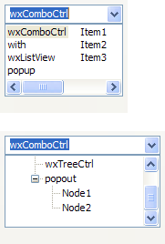
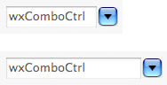

| Version: 2.9.4 |
#include </home/zeitlin/src/wx/github/interface/wx/combo.h>
 Inheritance diagram for wxComboCtrl:
Inheritance diagram for wxComboCtrl:A combo control is a generic combobox that allows totally custom popup.
In addition it has other customization features. For instance, position and size of the dropdown button can be changed.
wxComboCtrl needs to be told somehow which control to use and this is done by SetPopupControl(). However, we need something more than just a wxControl in this method as, for example, we need to call SetStringValue("initial text value") and wxControl doesn't have such method. So we also need a wxComboPopup which is an interface which must be implemented by a control to be usable as a popup.
We couldn't derive wxComboPopup from wxControl as this would make it impossible to have a class deriving from a wxWidgets control and from it, so instead it is just a mix-in.
Here's a minimal sample of wxListView popup:
#include <wx/combo.h> #include <wx/listctrl.h> class wxListViewComboPopup : public wxListView, public wxComboPopup { public: // Initialize member variables virtual void Init() { m_value = -1; } // Create popup control virtual bool Create(wxWindow* parent) { return wxListView::Create(parent,1,wxPoint(0,0),wxDefaultSize); } // Return pointer to the created control virtual wxWindow *GetControl() { return this; } // Translate string into a list selection virtual void SetStringValue(const wxString& s) { int n = wxListView::FindItem(-1,s); if ( n >= 0 && n < wxListView::GetItemCount() ) wxListView::Select(n); } // Get list selection as a string virtual wxString GetStringValue() const { if ( m_value >= 0 ) return wxListView::GetItemText(m_value); return wxEmptyString; } // Do mouse hot-tracking (which is typical in list popups) void OnMouseMove(wxMouseEvent& event) { // TODO: Move selection to cursor } // On mouse left up, set the value and close the popup void OnMouseClick(wxMouseEvent& WXUNUSED(event)) { m_value = wxListView::GetFirstSelected(); // TODO: Send event as well Dismiss(); } protected: int m_value; // current item index private: wxDECLARE_EVENT_TABLE(); }; wxBEGIN_EVENT_TABLE(wxListViewComboPopup, wxListView) EVT_MOTION(wxListViewComboPopup::OnMouseMove) EVT_LEFT_UP(wxListViewComboPopup::OnMouseClick) wxEND_EVENT_TABLE()
Here's how you would create and populate it in a dialog constructor:
wxComboCtrl* comboCtrl = new wxComboCtrl(this, wxID_ANY, wxEmptyString); wxListViewComboPopup* popupCtrl = new wxListViewComboPopup(); // It is important to call SetPopupControl() as soon as possible comboCtrl->SetPopupControl(popupCtrl); // Populate using wxListView methods popupCtrl->InsertItem(popupCtrl->GetItemCount(), "First Item"); popupCtrl->InsertItem(popupCtrl->GetItemCount(), "Second Item"); popupCtrl->InsertItem(popupCtrl->GetItemCount(), "Third Item");
This class supports the following styles:
wxEVT_COMMAND_TEXT_ENTER (otherwise pressing Enter key is either processed internally by the control or used for navigation between dialog controls). Windows only. The following event handler macros redirect the events to member function handlers 'func' with prototypes like:
Event macros for events emitted by this class:
wxEVT_COMMAND_TEXT_UPDATED event, when the text changes. wxEVT_COMMAND_TEXT_ENTER event, when RETURN is pressed in the combo control. wxEVT_COMMAND_COMBOBOX_DROPDOWN event, which is generated when the popup window is shown (drops down). wxEVT_COMMAND_COMBOBOX_CLOSEUP event, which is generated when the popup window of the combo control disappears (closes up). You should avoid adding or deleting items in this event. |  |  |  |
| wxMSW appearance | wxGTK appearance | wxMac appearance |
Public Member Functions | |
| wxComboCtrl () | |
| Default constructor. | |
| wxComboCtrl (wxWindow *parent, wxWindowID id=wxID_ANY, const wxString &value=wxEmptyString, const wxPoint &pos=wxDefaultPosition, const wxSize &size=wxDefaultSize, long style=0, const wxValidator &validator=wxDefaultValidator, const wxString &name=wxComboBoxNameStr) | |
| Constructor, creating and showing a combo control. | |
| virtual | ~wxComboCtrl () |
| Destructor, destroying the combo control. | |
| virtual void | Copy () |
| Copies the selected text to the clipboard. | |
| bool | Create (wxWindow *parent, wxWindowID id=wxID_ANY, const wxString &value=wxEmptyString, const wxPoint &pos=wxDefaultPosition, const wxSize &size=wxDefaultSize, long style=0, const wxValidator &validator=wxDefaultValidator, const wxString &name=wxComboBoxNameStr) |
| Creates the combo control for two-step construction. | |
| virtual void | Cut () |
| Copies the selected text to the clipboard and removes the selection. | |
| virtual void | Dismiss () |
| Dismisses the popup window. | |
| void | EnablePopupAnimation (bool enable=true) |
| Enables or disables popup animation, if any, depending on the value of the argument. | |
| virtual bool | IsKeyPopupToggle (const wxKeyEvent &event) const |
| Returns true if given key combination should toggle the popup. | |
| virtual void | PrepareBackground (wxDC &dc, const wxRect &rect, int flags) const |
| Prepare background of combo control or an item in a dropdown list in a way typical on platform. | |
| bool | ShouldDrawFocus () const |
| Returns true if focus indicator should be drawn in the control. | |
| const wxBitmap & | GetBitmapDisabled () const |
| Returns disabled button bitmap that has been set with SetButtonBitmaps(). | |
| const wxBitmap & | GetBitmapHover () const |
| Returns button mouse hover bitmap that has been set with SetButtonBitmaps(). | |
| const wxBitmap & | GetBitmapNormal () const |
| Returns default button bitmap that has been set with SetButtonBitmaps(). | |
| const wxBitmap & | GetBitmapPressed () const |
| Returns depressed button bitmap that has been set with SetButtonBitmaps(). | |
| wxSize | GetButtonSize () |
| Returns current size of the dropdown button. | |
| int | GetCustomPaintWidth () const |
| Returns custom painted area in control. | |
| virtual wxString | GetHint () const |
| Returns the current hint string. | |
| virtual long | GetInsertionPoint () const |
| Returns the insertion point for the combo control's text field. | |
| virtual long | GetLastPosition () const |
| Returns the last position in the combo control text field. | |
| wxPoint | GetMargins () const |
| Returns the margins used by the control. | |
| wxComboPopup * | GetPopupControl () |
| Returns current popup interface that has been set with SetPopupControl(). | |
| wxWindow * | GetPopupWindow () const |
| Returns popup window containing the popup control. | |
| wxTextCtrl * | GetTextCtrl () const |
| Get the text control which is part of the combo control. | |
| wxCoord | GetTextIndent () const |
| Returns actual indentation in pixels. | |
| const wxRect & | GetTextRect () const |
| Returns area covered by the text field (includes everything except borders and the dropdown button). | |
| virtual wxString | GetValue () const |
| Returns text representation of the current value. | |
| virtual void | HidePopup (bool generateEvent=false) |
| Dismisses the popup window. | |
| bool | IsPopupShown () const |
| Returns true if the popup is currently shown. | |
| bool | IsPopupWindowState (int state) const |
| Returns true if the popup window is in the given state. | |
| virtual void | OnButtonClick () |
| Implement in a derived class to define what happens on dropdown button click. | |
| virtual void | Paste () |
| Pastes text from the clipboard to the text field. | |
| virtual void | Popup () |
| Shows the popup portion of the combo control. | |
| virtual void | Remove (long from, long to) |
| Removes the text between the two positions in the combo control text field. | |
| virtual void | Replace (long from, long to, const wxString &text) |
| Replaces the text between two positions with the given text, in the combo control text field. | |
| void | SetButtonBitmaps (const wxBitmap &bmpNormal, bool pushButtonBg=false, const wxBitmap &bmpPressed=wxNullBitmap, const wxBitmap &bmpHover=wxNullBitmap, const wxBitmap &bmpDisabled=wxNullBitmap) |
| Sets custom dropdown button graphics. | |
| void | SetButtonPosition (int width=-1, int height=-1, int side=wxRIGHT, int spacingX=0) |
| Sets size and position of dropdown button. | |
| void | SetCustomPaintWidth (int width) |
Set width, in pixels, of custom painted area in control without wxCB_READONLY style. | |
| virtual bool | SetHint (const wxString &hint) |
| Sets a hint shown in an empty unfocused combo control. | |
| virtual void | SetInsertionPoint (long pos) |
| Sets the insertion point in the text field. | |
| virtual void | SetInsertionPointEnd () |
| Sets the insertion point at the end of the combo control text field. | |
| void | SetPopupAnchor (int anchorSide) |
| Set side of the control to which the popup will align itself. | |
| void | SetPopupControl (wxComboPopup *popup) |
| Set popup interface class derived from wxComboPopup. | |
| void | SetPopupExtents (int extLeft, int extRight) |
| Extends popup size horizontally, relative to the edges of the combo control. | |
| void | SetPopupMaxHeight (int height) |
| Sets preferred maximum height of the popup. | |
| void | SetPopupMinWidth (int width) |
| Sets minimum width of the popup. | |
| virtual void | SetSelection (long from, long to) |
| Selects the text between the two positions, in the combo control text field. | |
| void | SetText (const wxString &value) |
| Sets the text for the text field without affecting the popup. | |
| void | SetTextCtrlStyle (int style) |
| Set a custom window style for the embedded wxTextCtrl. | |
| void | SetTextIndent (int indent) |
| This will set the space in pixels between left edge of the control and the text, regardless whether control is read-only or not. | |
| virtual void | SetValue (const wxString &value) |
| Sets the text for the combo control text field. | |
| void | SetValueByUser (const wxString &value) |
| Changes value of the control as if user had done it by selecting an item from a combo box drop-down list. | |
| virtual void | ShowPopup () |
| Show the popup. | |
| virtual void | Undo () |
| Undoes the last edit in the text field. | |
| void | UseAltPopupWindow (bool enable=true) |
| Enable or disable usage of an alternative popup window, which guarantees ability to focus the popup control, and allows common native controls to function normally. | |
| bool | SetMargins (const wxPoint &pt) |
| Attempts to set the control margins. | |
| bool | SetMargins (wxCoord left, wxCoord top=-1) |
| Attempts to set the control margins. | |
Static Public Member Functions | |
| static int | GetFeatures () |
| Returns features supported by wxComboCtrl. | |
Protected Member Functions | |
| virtual bool | AnimateShow (const wxRect &rect, int flags) |
| This member function is not normally called in application code. | |
| virtual void | DoSetPopupControl (wxComboPopup *popup) |
| This member function is not normally called in application code. | |
| virtual void | DoShowPopup (const wxRect &rect, int flags) |
| This member function is not normally called in application code. | |
| wxComboCtrl::wxComboCtrl | ( | ) |
Default constructor.
| wxComboCtrl::wxComboCtrl | ( | wxWindow * | parent, |
| wxWindowID | id = wxID_ANY, |
||
| const wxString & | value = wxEmptyString, |
||
| const wxPoint & | pos = wxDefaultPosition, |
||
| const wxSize & | size = wxDefaultSize, |
||
| long | style = 0, |
||
| const wxValidator & | validator = wxDefaultValidator, |
||
| const wxString & | name = wxComboBoxNameStr |
||
| ) |
Constructor, creating and showing a combo control.
| parent | Parent window. Must not be NULL. |
| id | Window identifier. The value wxID_ANY indicates a default value. |
| value | Initial selection string. An empty string indicates no selection. |
| pos | Window position. If wxDefaultPosition is specified then a default position is chosen. |
| size | Window size. If wxDefaultSize is specified then the window is sized appropriately. |
| style | Window style. See wxComboCtrl. |
| validator | Window validator. |
| name | Window name. |
| virtual wxComboCtrl::~wxComboCtrl | ( | ) | [virtual] |
Destructor, destroying the combo control.
| virtual bool wxComboCtrl::AnimateShow | ( | const wxRect & | rect, |
| int | flags | ||
| ) | [protected, virtual] |
This member function is not normally called in application code.
Instead, it can be implemented in a derived class to create a custom popup animation.
The parameters are the same as those for DoShowPopup().
| virtual void wxComboCtrl::Copy | ( | ) | [virtual] |
Copies the selected text to the clipboard.
Reimplemented from wxTextEntry.
| bool wxComboCtrl::Create | ( | wxWindow * | parent, |
| wxWindowID | id = wxID_ANY, |
||
| const wxString & | value = wxEmptyString, |
||
| const wxPoint & | pos = wxDefaultPosition, |
||
| const wxSize & | size = wxDefaultSize, |
||
| long | style = 0, |
||
| const wxValidator & | validator = wxDefaultValidator, |
||
| const wxString & | name = wxComboBoxNameStr |
||
| ) |
Creates the combo control for two-step construction.
Derived classes should call or replace this function. See wxComboCtrl() for further details.
Reimplemented in wxOwnerDrawnComboBox.
| virtual void wxComboCtrl::Cut | ( | ) | [virtual] |
Copies the selected text to the clipboard and removes the selection.
| virtual void wxComboCtrl::Dismiss | ( | ) | [virtual] |
Dismisses the popup window.
Notice that calling this function will generate a wxEVT_COMMAND_COMBOBOX_CLOSEUP event.
| virtual void wxComboCtrl::DoSetPopupControl | ( | wxComboPopup * | popup | ) | [protected, virtual] |
This member function is not normally called in application code.
Instead, it can be implemented in a derived class to return default wxComboPopup, in case popup is NULL.
| virtual void wxComboCtrl::DoShowPopup | ( | const wxRect & | rect, |
| int | flags | ||
| ) | [protected, virtual] |
This member function is not normally called in application code.
Instead, it must be called in a derived class to make sure popup is properly shown after a popup animation has finished (but only if AnimateShow() did not finish the animation within its function scope).
| rect | Position to show the popup window at, in screen coordinates. | ||||
| flags | Combination of any of the following:
|
| void wxComboCtrl::EnablePopupAnimation | ( | bool | enable = true | ) |
Enables or disables popup animation, if any, depending on the value of the argument.
| const wxBitmap& wxComboCtrl::GetBitmapDisabled | ( | ) | const |
Returns disabled button bitmap that has been set with SetButtonBitmaps().
| const wxBitmap& wxComboCtrl::GetBitmapHover | ( | ) | const |
Returns button mouse hover bitmap that has been set with SetButtonBitmaps().
| const wxBitmap& wxComboCtrl::GetBitmapNormal | ( | ) | const |
Returns default button bitmap that has been set with SetButtonBitmaps().
| const wxBitmap& wxComboCtrl::GetBitmapPressed | ( | ) | const |
Returns depressed button bitmap that has been set with SetButtonBitmaps().
| wxSize wxComboCtrl::GetButtonSize | ( | ) |
Returns current size of the dropdown button.
| int wxComboCtrl::GetCustomPaintWidth | ( | ) | const |
Returns custom painted area in control.
| static int wxComboCtrl::GetFeatures | ( | ) | [static] |
Returns features supported by wxComboCtrl.
If needed feature is missing, you need to instead use wxGenericComboCtrl, which however may lack a native look and feel (but otherwise sports identical API).
| virtual wxString wxComboCtrl::GetHint | ( | ) | const [virtual] |
Returns the current hint string.
See SetHint() for more information about hints.
Reimplemented from wxTextEntry.
| virtual long wxComboCtrl::GetInsertionPoint | ( | ) | const [virtual] |
Returns the insertion point for the combo control's text field.
Reimplemented from wxTextEntry.
| virtual long wxComboCtrl::GetLastPosition | ( | ) | const [virtual] |
Returns the last position in the combo control text field.
Reimplemented from wxTextEntry.
| wxPoint wxComboCtrl::GetMargins | ( | ) | const |
Returns the margins used by the control.
The x field of the returned point is the horizontal margin and the y field is the vertical one.
Reimplemented from wxTextEntry.
| wxComboPopup* wxComboCtrl::GetPopupControl | ( | ) |
Returns current popup interface that has been set with SetPopupControl().
| wxWindow* wxComboCtrl::GetPopupWindow | ( | ) | const |
Returns popup window containing the popup control.
| wxTextCtrl* wxComboCtrl::GetTextCtrl | ( | ) | const |
Get the text control which is part of the combo control.
| wxCoord wxComboCtrl::GetTextIndent | ( | ) | const |
Returns actual indentation in pixels.
| const wxRect& wxComboCtrl::GetTextRect | ( | ) | const |
Returns area covered by the text field (includes everything except borders and the dropdown button).
| virtual wxString wxComboCtrl::GetValue | ( | ) | const [virtual] |
Returns text representation of the current value.
For writable combo control it always returns the value in the text field.
Reimplemented from wxTextEntry.
| virtual void wxComboCtrl::HidePopup | ( | bool | generateEvent = false | ) | [virtual] |
Dismisses the popup window.
| generateEvent | Set this to true in order to generate wxEVT_COMMAND_COMBOBOX_CLOSEUP event. |
| virtual bool wxComboCtrl::IsKeyPopupToggle | ( | const wxKeyEvent & | event | ) | const [virtual] |
Returns true if given key combination should toggle the popup.
| bool wxComboCtrl::IsPopupShown | ( | ) | const |
Returns true if the popup is currently shown.
| bool wxComboCtrl::IsPopupWindowState | ( | int | state | ) | const |
Returns true if the popup window is in the given state.
Possible values are:
| wxComboCtrl::Hidden | Popup window is hidden. |
| wxComboCtrl::Animating | Popup window is being shown, but the popup animation has not yet finished. |
| wxComboCtrl::Visible | Popup window is fully visible. |
| virtual void wxComboCtrl::OnButtonClick | ( | ) | [virtual] |
Implement in a derived class to define what happens on dropdown button click.
Default action is to show the popup.
| virtual void wxComboCtrl::Paste | ( | ) | [virtual] |
Pastes text from the clipboard to the text field.
Reimplemented from wxTextEntry.
| virtual void wxComboCtrl::Popup | ( | ) | [virtual] |
Shows the popup portion of the combo control.
Notice that calling this function will generate a wxEVT_COMMAND_COMBOBOX_DROPDOWN event.
| virtual void wxComboCtrl::PrepareBackground | ( | wxDC & | dc, |
| const wxRect & | rect, | ||
| int | flags | ||
| ) | const [virtual] |
Prepare background of combo control or an item in a dropdown list in a way typical on platform.
This includes painting the focus/disabled background and setting the clipping region.
Unless you plan to paint your own focus indicator, you should always call this in your wxComboPopup::PaintComboControl implementation. In addition, it sets pen and text colour to what looks good and proper against the background.
flags: wxRendererNative flags: wxCONTROL_ISSUBMENU: is drawing a list item instead of combo control wxCONTROL_SELECTED: list item is selected wxCONTROL_DISABLED: control/item is disabled
| virtual void wxComboCtrl::Remove | ( | long | from, |
| long | to | ||
| ) | [virtual] |
Removes the text between the two positions in the combo control text field.
| from | The first position. |
| to | The last position. |
Reimplemented from wxTextEntry.
| virtual void wxComboCtrl::Replace | ( | long | from, |
| long | to, | ||
| const wxString & | text | ||
| ) | [virtual] |
Replaces the text between two positions with the given text, in the combo control text field.
| from | The first position. |
| to | The second position. |
| text | The text to insert. |
Reimplemented from wxTextEntry.
| void wxComboCtrl::SetButtonBitmaps | ( | const wxBitmap & | bmpNormal, |
| bool | pushButtonBg = false, |
||
| const wxBitmap & | bmpPressed = wxNullBitmap, |
||
| const wxBitmap & | bmpHover = wxNullBitmap, |
||
| const wxBitmap & | bmpDisabled = wxNullBitmap |
||
| ) |
Sets custom dropdown button graphics.
| bmpNormal | Default button image. |
| pushButtonBg | If true, blank push button background is painted below the image. |
| bmpPressed | Depressed button image. |
| bmpHover | Button image when mouse hovers above it. This should be ignored on platforms and themes that do not generally draw different kind of button on mouse hover. |
| bmpDisabled | Disabled button image. |
| void wxComboCtrl::SetButtonPosition | ( | int | width = -1, |
| int | height = -1, |
||
| int | side = wxRIGHT, |
||
| int | spacingX = 0 |
||
| ) |
Sets size and position of dropdown button.
| width | Button width. Value = 0 specifies default. |
| height | Button height. Value = 0 specifies default. |
| side | Indicates which side the button will be placed. Value can be wxLEFT or wxRIGHT. |
| spacingX | Horizontal spacing around the button. Default is 0. |
| void wxComboCtrl::SetCustomPaintWidth | ( | int | width | ) |
Set width, in pixels, of custom painted area in control without wxCB_READONLY style.
In read-only wxOwnerDrawnComboBox, this is used to indicate area that is not covered by the focus rectangle.
| virtual bool wxComboCtrl::SetHint | ( | const wxString & | hint | ) | [virtual] |
Sets a hint shown in an empty unfocused combo control.
Notice that hints are known as cue banners under MSW or placeholder strings under OS X.
Reimplemented from wxTextEntry.
| virtual void wxComboCtrl::SetInsertionPoint | ( | long | pos | ) | [virtual] |
Sets the insertion point in the text field.
| pos | The new insertion point. |
Reimplemented from wxTextEntry.
| virtual void wxComboCtrl::SetInsertionPointEnd | ( | ) | [virtual] |
Sets the insertion point at the end of the combo control text field.
Reimplemented from wxTextEntry.
| bool wxComboCtrl::SetMargins | ( | const wxPoint & | pt | ) |
Attempts to set the control margins.
When margins are given as wxPoint, x indicates the left and y the top margin. Use -1 to indicate that an existing value should be used.
Reimplemented from wxTextEntry.
Attempts to set the control margins.
When margins are given as wxPoint, x indicates the left and y the top margin. Use -1 to indicate that an existing value should be used.
Reimplemented from wxTextEntry.
| void wxComboCtrl::SetPopupAnchor | ( | int | anchorSide | ) |
Set side of the control to which the popup will align itself.
Valid values are wxLEFT, wxRIGHT and 0. The default value 0 means that the most appropriate side is used (which, currently, is always wxLEFT).
| void wxComboCtrl::SetPopupControl | ( | wxComboPopup * | popup | ) |
Set popup interface class derived from wxComboPopup.
This method should be called as soon as possible after the control has been created, unless OnButtonClick() has been overridden.
| void wxComboCtrl::SetPopupExtents | ( | int | extLeft, |
| int | extRight | ||
| ) |
Extends popup size horizontally, relative to the edges of the combo control.
| extLeft | How many pixel to extend beyond the left edge of the control. Default is 0. |
| extRight | How many pixel to extend beyond the right edge of the control. Default is 0. |
| void wxComboCtrl::SetPopupMaxHeight | ( | int | height | ) |
Sets preferred maximum height of the popup.
| void wxComboCtrl::SetPopupMinWidth | ( | int | width | ) |
Sets minimum width of the popup.
If wider than combo control, it will extend to the left.
| virtual void wxComboCtrl::SetSelection | ( | long | from, |
| long | to | ||
| ) | [virtual] |
Selects the text between the two positions, in the combo control text field.
| from | The first position. |
| to | The second position. |
Reimplemented from wxTextEntry.
| void wxComboCtrl::SetText | ( | const wxString & | value | ) |
Sets the text for the text field without affecting the popup.
Thus, unlike SetValue(), it works equally well with combo control using wxCB_READONLY style.
| void wxComboCtrl::SetTextCtrlStyle | ( | int | style | ) |
Set a custom window style for the embedded wxTextCtrl.
Usually you will need to use this during two-step creation, just before Create(). 以下に例を示します:
wxComboCtrl* comboCtrl = new wxComboCtrl(); // Let's make the text right-aligned comboCtrl->SetTextCtrlStyle(wxTE_RIGHT); comboCtrl->Create(parent, wxID_ANY, wxEmptyString);
| void wxComboCtrl::SetTextIndent | ( | int | indent | ) |
This will set the space in pixels between left edge of the control and the text, regardless whether control is read-only or not.
Value -1 can be given to indicate platform default.
| virtual void wxComboCtrl::SetValue | ( | const wxString & | value | ) | [virtual] |
Sets the text for the combo control text field.
wxCB_READONLY style the string must be accepted by the popup (for instance, exist in the dropdown list), otherwise the call to SetValue() is ignored. Reimplemented from wxTextEntry.
| void wxComboCtrl::SetValueByUser | ( | const wxString & | value | ) |
Changes value of the control as if user had done it by selecting an item from a combo box drop-down list.
| bool wxComboCtrl::ShouldDrawFocus | ( | ) | const |
Returns true if focus indicator should be drawn in the control.
| virtual void wxComboCtrl::ShowPopup | ( | ) | [virtual] |
Show the popup.
| virtual void wxComboCtrl::Undo | ( | ) | [virtual] |
| void wxComboCtrl::UseAltPopupWindow | ( | bool | enable = true | ) |
Enable or disable usage of an alternative popup window, which guarantees ability to focus the popup control, and allows common native controls to function normally.
This alternative popup window is usually a wxDialog, and as such, when it is shown, its parent top-level window will appear as if the focus has been lost from it.